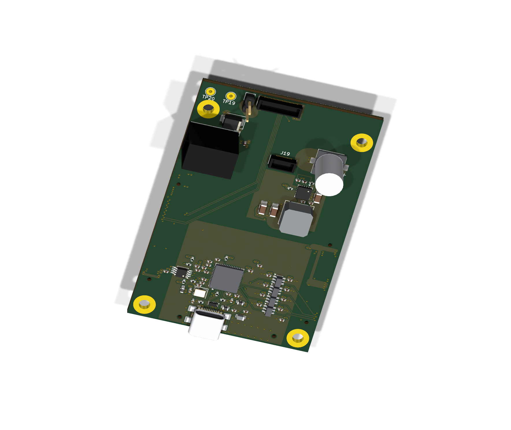

Published 12 October 2026 · CAD revision 10 October 2026
XEM8305 / LDO carrier · R15
Routed design reviewRotate the full stack: XEM8305 above the carrier and Gerald’s LDO board underneath. Separate the boards to see MC1–MC3 and J1/J19. Switch to Routing to inspect the saved six-layer copper. R15 widens 437 power and ground sections while keeping the signal paths, component positions and 53 × 83 mm outline.
6 copper layers2 inner ground planes75 carrier component bodiesUSB-C JTAG
XEM, carrier and LDO attachment
0 mm = nominal seated position

Loading XEM, carrier and LDO…
XEM + R15 carrier + LDO · attachment viewDrag to rotate · right-drag to pan · scroll to zoomDownload carrier KiCad files